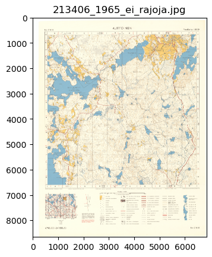
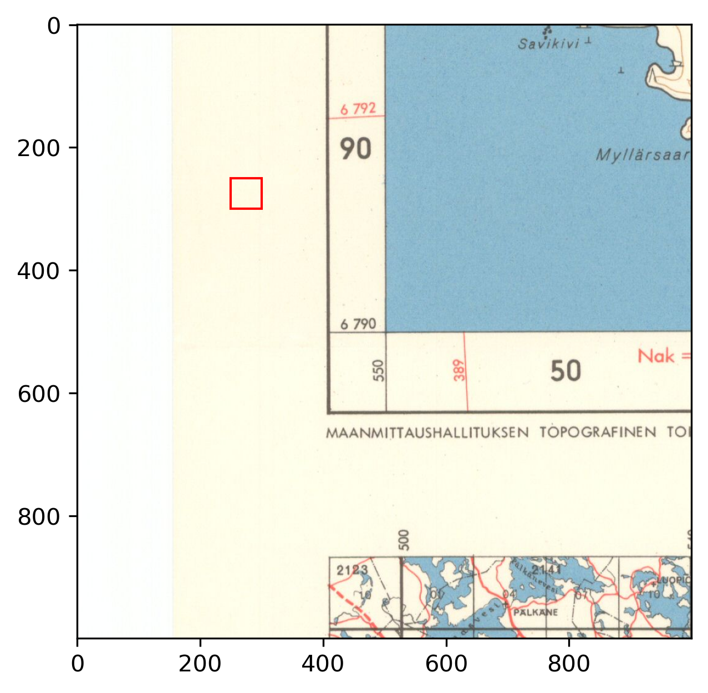
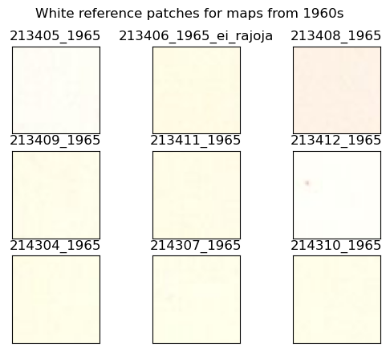
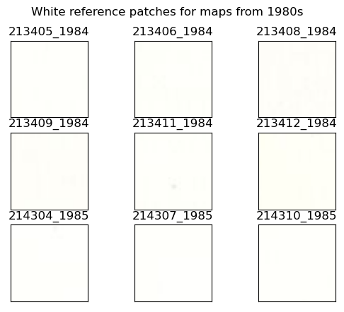
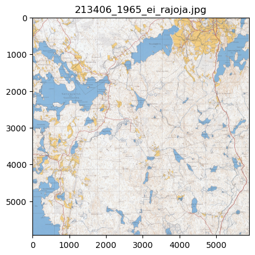
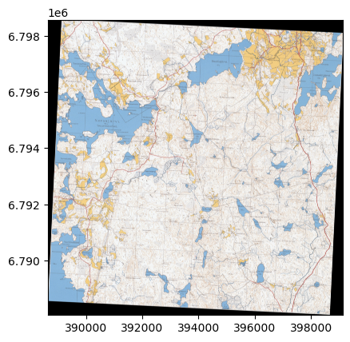

Code
import pandas as pd
from osgeo import gdal
from pyproj import CRS, Transformer
import os
from pathlib import Path
import pandas as pd
import matplotlib.pyplot as plt
import cv2
import numpy as npimport pandas as pd
from osgeo import gdal
from pyproj import CRS, Transformer
import os
from pathlib import Path
import pandas as pd
import matplotlib.pyplot as plt
import cv2
import numpy as npThe study area is located in the vicinity of Evo, Finland, and consists of 9 map sheets. From each map sheet, we have two different historical scanned maps, older from 1965 and newer from either 1984 or 1985. The maps were provided by The National Land Survey of Finland, and the ground control points for each individual map were acquired from vanhatkartat.fi by Shingle Oy.
As the maps contain a lot of unnecessary information, such as ticks for coordinates and legend for map symbols, first step is to crop the maps to contain only the relevant information and adjust the GCPs accordingly.
map_path = Path('../data/maps/raw_maps/')
gcp_path = Path('../data/gcps/raw/')
map_files = sorted([f for f in os.listdir(map_path) if f.endswith('jpg')])Scanned old maps look like this:
ex_file = map_files[2]
ex_im = cv2.imread(str(map_path/ex_file))
ex_im = cv2.cvtColor(ex_im, cv2.COLOR_BGR2RGB)
plt.imshow(ex_im)
plt.title(ex_file)
plt.show()
And the corresponding ground control points (GCPs) are saved in this format:
points = pd.read_csv(gcp_path/f'{ex_file}.points')
points.head()| mapX | mapY | pixelX | pixelY | enable | dX | dY | residual | |
|---|---|---|---|---|---|---|---|---|
| 0 | 24.929733 | 61.305223 | 574 | 700 | 1 | 0 | 0 | 0 |
| 1 | 25.116309 | 61.303818 | 6454 | 684 | 1 | 0 | 0 | 0 |
| 2 | 25.113131 | 61.214096 | 6470 | 6589 | 1 | 0 | 0 | 0 |
| 3 | 24.927086 | 61.215496 | 587 | 6607 | 1 | 0 | 0 | 0 |
At this point, we also adjust the white balance for all of the maps, as it varies a lot. As the reference white patch, we used 50x50 pixel patch outside the map contents.
import matplotlib.patches as patches
fig, ax = plt.subplots(dpi=300)
ax.imshow(ex_im[int(points.iloc[3].pixelY-500):int(points.iloc[3].pixelY+500),
int(points.iloc[3].pixelX-500):int(points.iloc[3].pixelX+500)])
rect = patches.Rectangle((250,250), 50,50,
linewidth=1, edgecolor='r', facecolor='none')
ax.add_patch(rect)
plt.show()
To visualize how much the color balance varies between sheets, the white reference patches look like this. Without any wear, each of these patches should be white.
patches_65 = []
patches_80s = []
for r in map_files:
m = cv2.imread(str(map_path/r))
points = pd.read_csv(gcp_path/f'{r}.points')
if '1965' in r:
patch = m[int(points.iloc[3].pixelY-250):int(points.iloc[3].pixelY-200),
int(points.iloc[3].pixelX-250):int(points.iloc[3].pixelX-200)]
patches_65.append(patch)
else:
patch = m[int(points.iloc[3].pixelY-250):int(points.iloc[3].pixelY-200),
int(points.iloc[3].pixelX-175):int(points.iloc[3].pixelX-125)]
patches_80s.append(patch)
fig, axs = plt.subplots(3,3)
for p, a, fname in zip(patches_65, axs.flatten(), map_files[::2]):
a.set_xticks([])
a.set_yticks([])
a.imshow(cv2.cvtColor(p, cv2.COLOR_BGR2RGB))
a.set_title(fname[:-4])
plt.suptitle('White reference patches for maps from 1960s')
plt.show()
fig, axs = plt.subplots(3,3)
for p, a, fname in zip(patches_80s, axs.flatten(), map_files[1::2]):
a.set_xticks([])
a.set_yticks([])
a.imshow(cv2.cvtColor(p, cv2.COLOR_BGR2RGB))
a.set_title(fname[:-4])
plt.suptitle('White reference patches for maps from 1980s')
plt.show()
patches_80s = None
patches_65 = None
White balance is adjusted with the following formula, where ref_white is the mean value of the corresponding patch.
def white_balance(im, ref_white):
lum = sum(ref_white) / 3
r = im[...,2] * lum / ref_white[2]
g = im[...,1] * lum / ref_white[1]
b = im[...,0] * lum / ref_white[0]
r = np.clip(r, 0, 255).astype(np.uint8)
g = np.clip(g, 0, 255).astype(np.uint8)
b = np.clip(b, 0, 255).astype(np.uint8)
return np.dstack([b,g,r])Next step is to crop, scale GCPs and adjust white balance:
cropped_gcp_path = Path('../data/gcps/cropped/')
cropped_map_path = Path('../data/maps/cropped_maps/')
for m in map_files:
im = cv2.imread(str(map_path/m))
points = pd.read_csv(gcp_path/f'{m}.points')
xmin = points.pixelX.min()
xmax = points.pixelX.max()
ymin = points.pixelY.min()
ymax = points.pixelY.max()
new_points = points.copy()
new_points.loc[0, 'pixelX'] = max(0, new_points.iloc[0]['pixelX'] - xmin)
new_points.loc[0, 'pixelY'] = max(0, new_points.iloc[0]['pixelY'] - ymin)
new_points.loc[1, 'pixelX'] = min(xmax-xmin, new_points.iloc[1]['pixelX']-xmin)
new_points.loc[1, 'pixelY'] = max(0, new_points.iloc[1]['pixelY'] - ymin)
new_points.loc[2, 'pixelX'] = min(xmax-xmin, new_points.iloc[2]['pixelX']-xmin)
new_points.loc[2, 'pixelY'] = min(ymax-ymin, new_points.iloc[2]['pixelY']-ymin)
new_points.loc[3, 'pixelX'] = max(0, new_points.iloc[3]['pixelX'] - xmin)
new_points.loc[3, 'pixelY'] = min(ymax-ymin, new_points.iloc[3]['pixelY']-ymin)
new_points.to_csv(cropped_gcp_path/f'{m}.points', index=False)
if '1965' in r:
patch = im[int(points.iloc[3].pixelY-250):int(points.iloc[3].pixelY-200),
int(points.iloc[3].pixelX-250):int(points.iloc[3].pixelX-200)]
else:
patch = im[int(points.iloc[3].pixelY-250):int(points.iloc[3].pixelY-200),
int(points.iloc[3].pixelX-175):int(points.iloc[3].pixelX-125)]
cropped_map = im[ymin:ymax, xmin:xmax]
cropped_map = white_balance(cropped_map, patch.mean(axis=(0,1)))
cv2.imwrite(str(cropped_map_path/m), cropped_map)After cropping only the relevant area remains, and all maps have more or less similar color balance.
cropped_ex = cv2.imread(str(cropped_map_path/ex_file))
cropped_ex = cv2.cvtColor(cropped_ex, cv2.COLOR_BGR2RGB)
plt.imshow(cropped_ex)
plt.title(ex_file)
plt.show()
And the GCPs are adjusted accordingly.
cropped_points = pd.read_csv(cropped_gcp_path/f'{ex_file}.points')
cropped_points.head()| mapX | mapY | pixelX | pixelY | enable | dX | dY | residual | |
|---|---|---|---|---|---|---|---|---|
| 0 | 24.929733 | 61.305223 | 0 | 16 | 1 | 0 | 0 | 0 |
| 1 | 25.116309 | 61.303818 | 5880 | 0 | 1 | 0 | 0 | 0 |
| 2 | 25.113131 | 61.214096 | 5896 | 5905 | 1 | 0 | 0 | 0 |
| 3 | 24.927086 | 61.215496 | 13 | 5923 | 1 | 0 | 0 | 0 |
After cropping, the maps are aligned and converted to EPSG:3067 coordinates, as it is closest to the original map CRS. GCPs are in EPSG:4326, so they need to be converted first. Overall it’s just a simple gdal.Translate and gdal.Warp.
aligned_map_outpath = Path('../data/maps/aligned_maps/')
in_crs = CRS('EPSG:4326')
out_crs = CRS('EPSG:3067')
transformer = Transformer.from_crs(in_crs, out_crs, always_xy=True)
for m in map_files:
gcp_list = []
new_points = pd.read_csv(cropped_gcp_path/f'{m}.points')
for row in new_points.itertuples():
tfmd_x, tfmd_y = transformer.transform(row.mapX, row.mapY)
gcp_list.append(gdal.GCP(tfmd_x, tfmd_y, 1, row.pixelX, row.pixelY))
translate_kwargs = {
'GCPs': gcp_list,
'format': 'GTIFF',
'bandList': [1,2,3]
}
out_fname = m.replace('jpg', 'tif')
gdal.Translate(str(aligned_map_outpath/out_fname), str(cropped_map_path/m), **translate_kwargs)
gdal.Warp(str(aligned_map_outpath/out_fname), str(aligned_map_outpath/out_fname),
options='-r near -tps -co COMPRESS=LZW -t_srs EPSG:3067')Final results are georeferenced RGB images in EPSG:3067 coordinates, which then look like this.
import rasterio as rio
import rasterio.plot as rioplotsrc = rio.open(aligned_map_outpath/ex_file.replace('jpg', 'tif'))
rioplot.show(src)
<AxesSubplot: >Finally a picture to show the full preprocessing workflow at once.
fig, axs = plt.subplots(2,2, dpi=300, figsize=(12,12))
points = pd.read_csv(gcp_path/f'{ex_file}.points')
for a in axs.flatten()[:-1]:
a.set_xticks([])
a.set_yticks([])
axs[0,0].imshow(ex_im)
axs[0,1].imshow(ex_im[int(points.iloc[3].pixelY-500):int(points.iloc[3].pixelY+500),
int(points.iloc[3].pixelX-500):int(points.iloc[3].pixelX+500)])
rect = patches.Rectangle((250,250), 50,50,
linewidth=1, edgecolor='r', facecolor='none')
axs[0,1].add_patch(rect)
axs[1,0].imshow(cropped_ex)
axs[0,0].set_title('Raw scanned map sheet')
axs[0,1].set_title('Location of reference patch for white balancing')
axs[1,0].set_title('White balanced and cropped map')
axs[1,1].set_title('Georeferenced map')
rioplot.show(src, ax=axs[1,1])
plt.savefig('../data/figures/preproc_steps.jpg', dpi=300, bbox_inches='tight')
plt.show()